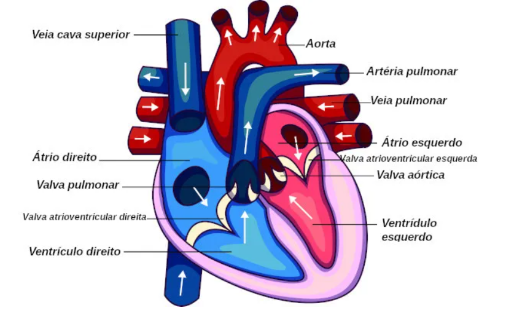
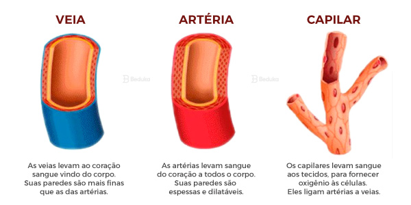
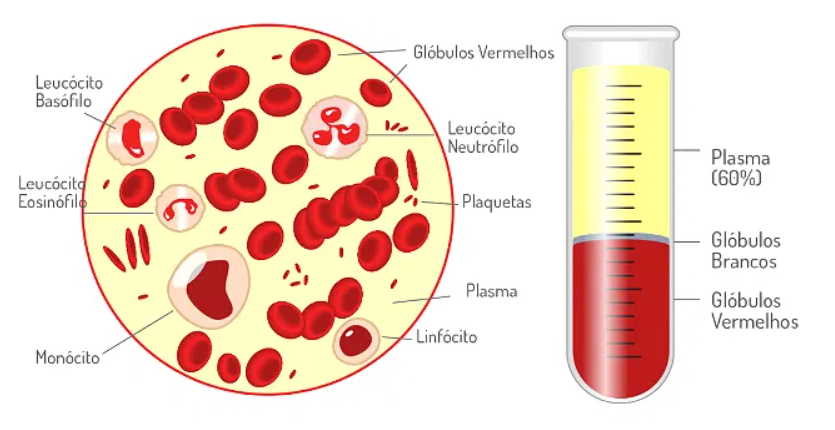
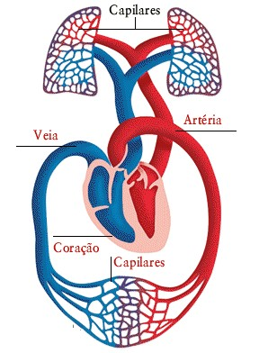
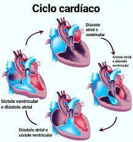
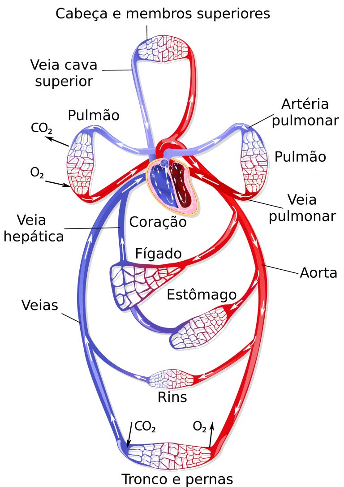

1. Introdução ao Sistema Circulatório
O sistema circulatório, também conhecido como sistema cardiovascular, é um dos sistemas mais essenciais do corpo humano, responsável por transportar nutrientes, oxigênio, hormônios e outros compostos vitais para as células, além de remover resíduos metabólicos, como dióxido de carbono. Ele também desempenha papéis fundamentais na regulação da temperatura corporal, na resposta imune e na manutenção do equilíbrio de fluidos.
O sistema circulatório humano é classificado como duplo (composto por duas circulações distintas: pulmonar e sistêmica) e fechado (o sangue permanece dentro dos vasos). Ele é composto por três elementos principais:
- Coração: O órgão central que atua como uma bomba, impulsionando o sangue.
- Vasos sanguíneos: Rede de tubos (artérias, veias e capilares) que transportam o sangue.
- Sangue: O fluido que carrega nutrientes, gases e resíduos.
-
Diagrama ilustrativo do sistema circulatório

2. Componentes do Sistema Circulatório
2.1. Coração
O coração é um órgão muscular, aproximadamente do tamanho de um punho fechado, localizado no centro do tórax, ligeiramente inclinado à esquerda. Ele é dividido em quatro câmaras:
- Átrios: Duas câmaras superiores (átrio direito e átrio esquerdo) que recebem sangue.
- Ventrículos: Duas câmaras inferiores (ventrículo direito e ventrículo esquerdo) que bombeiam sangue.
Estrutura do Coração
- Pericárdio: Membrana dupla que envolve o coração, protegendo-o e reduzindo o atrito durante os batimentos.
- Miocárdio: Camada muscular espessa responsável pela contração do coração.
- Endocárdio: Camada interna lisa que entra em contato com o sangue.
- Válvulas cardíacas: Estruturas que garantem o fluxo unidirecional do sangue:
- Válvulas atrioventriculares: Tricúspide (entre o átrio direito e o ventrículo direito) e mitral (entre o átrio esquerdo e o ventrículo esquerdo).
- Válvulas semilunares: Pulmonar (saída do ventrículo direito) e aórtica (saída do ventrículo esquerdo).
Funcionamento
O coração funciona como uma bomba dupla:
- O lado direito bombeia sangue desoxigenado para os pulmões (circulação pulmonar).
- O lado esquerdo bombeia sangue oxigenado para o resto do corpo (circulação sistêmica).
O ciclo cardíaco consiste em duas fases:
- Sístole: Contração dos ventrículos, que ejeta sangue para as artérias.
- Diástole: Relaxamento dos ventrículos, quando o coração se enche de sangue.
- Estrutura do coração humano 
2.2. Vasos Sanguíneos
Os vasos sanguíneos formam uma rede extensa que transporta o sangue pelo corpo. Eles são classificados em três tipos principais:
Artérias
- Função: Transportam sangue oxigenado do coração para os tecidos.
- Estrutura: Paredes espessas e elásticas para suportar alta pressão.
- Exemplo principal: A aorta, que distribui sangue para todo o corpo.
- Características: Geralmente levam sangue oxigenado, exceto as artérias pulmonares, que transportam sangue desoxigenado para os pulmões.
Capilares
- Função: Permitem a troca de oxigênio, nutrientes e resíduos entre o sangue e os tecidos.
- Estrutura: Paredes finas (uma única camada de células), ideais para difusão.
- Localização: Estão presentes em todos os tecidos do corpo, formando redes capilares.
Veias
- Função: Retornam sangue desoxigenado ao coração.
- Estrutura: Paredes mais finas e menos elásticas que as artérias, com válvulas internas para evitar o refluxo.
- Exemplo principal: Veias cavas (superior e inferior), que levam sangue ao átrio direito.
- Tipos de vasos sanguíneos 
2.3. Sangue
O sangue é um tecido conjuntivo líquido composto por:
- Plasma (55%): Parte líquida, composta por água, eletrólitos, proteínas (como albumina e globulinas) e outras moléculas.
- Elementos figurados (45%):
- Hemácias (glóbulos vermelhos): Transportam oxigênio via hemoglobina.
- Leucócitos (glóbulos brancos): Atuam na defesa imunológica.
- Plaquetas: Responsáveis pela coagulação.
Funções do Sangue
- Transporte de oxigênio e nutrientes.
- Remoção de dióxido de carbono e resíduos metabólicos.
- Regulação da temperatura e do pH.
- Transporte de hormônios e enzimas.
- Defesa contra infecções.
- Composição do sangue 
3. Tipos de Circulação
3.1. Circulação Pulmonar
- Trajeto: Sangue desoxigenado sai do ventrículo direito, passa pelas artérias pulmonares, chega aos pulmões, onde é oxigenado, e retorna ao átrio esquerdo pelas veias pulmonares.
- Função: Oxigenar o sangue e eliminar dióxido de carbono.
3.2. Circulação Sistêmica
- Trajeto: Sangue oxigenado sai do ventrículo esquerdo pela aorta, distribui-se pelos tecidos via artérias, arteríolas e capilares, e retorna ao átrio direito pelas veias.
- Função: Fornecer oxigênio e nutrientes aos tecidos e coletar resíduos.
3.3. Circulação Coronariana
- Descrição: Subtipo da circulação sistêmica, irriga o próprio músculo cardíaco por meio das artérias coronárias.
- Importância: Qualquer obstrução pode causar isquemia ou infarto do miocárdio.
- Fluxo da circulação pulmonar e sistêmica 
4. Regulação do Sistema Circulatório
4.1. Regulação Cardíaca
- Sistema nervoso autônomo:
- Simpático: Aumenta a frequência e a força dos batimentos (ex.: durante exercício).
- Parassimpático: Reduz a frequência cardíaca (ex.: em repouso).
- Hormônios: Adrenalina e noradrenalina aumentam a atividade cardíaca.
- Nó sinusal: Gerador de impulsos elétricos que inicia os batimentos.
4.2. Regulação da Pressão Arterial
- Barorreceptores: Sensores nas artérias que detectam mudanças na pressão e ajustam o sistema nervoso.
- Sistema renina-angiotensina-aldosterona: Regula o volume de sangue e a pressão arterial.
- Vasos sanguíneos: Vasoconstrição (reduz diâmetro dos vasos) ou vasodilatação (aumenta diâmetro) ajustam a pressão.
5. Fisiologia do Sistema Circulatório
5.1. Ciclo Cardíaco
- Sístole ventricular: Ejeção de ~70 mL de sangue por batimento (débito sistólico).
- Diástole: Enchimento dos ventrículos.
- Frequência cardíaca: Em média, 60-100 batimentos por minuto em repouso.
5.2. Volume Sanguíneo
- Um adulto possui cerca de 5-6 litros de sangue.
- O débito cardíaco (volume de sangue bombeado por minuto) é calculado como:
\[ \text{Débito Cardíaco} = \text{Frequência Cardíaca} \times \text{Volume Sistólico} \]
5.3. Trocas nos Capilares
- Difusão: Oxigênio e nutrientes saem do sangue para os tecidos; CO₂ e resíduos entram no sangue.
- Pressão hidrostática e osmótica: Regulam o movimento de fluidos nos capilares.
- Ciclo cardíaco e trocas capilares 
6. Patologias do Sistema Circulatório
Algumas condições comuns incluem:
- Hipertensão: Pressão arterial cronicamente elevada.
- Aterosclerose: Acúmulo de placas nas artérias, podendo levar a infarto ou AVC.
- Insuficiência cardíaca: Incapacidade do coração de bombear sangue adequadamente.
- Arritmias: Alterações no ritmo cardíaco.
- Trombose: Formação de coágulos que podem obstruir vasos.
7. Curiosidades e Importância
- O coração bate cerca de 100.000 vezes por dia, bombeando aproximadamente 7.500 litros de sangue.
- A hemoglobina contém ferro, que se liga ao oxigênio, dando ao sangue sua cor vermelha.
- O sistema circulatório interage com todos os outros sistemas do corpo, sendo essencial para a homeostase.
Para ilustrar a circulação, imagine o coração como uma estação central de bombeamento, com as artérias como estradas principais que se ramificam em vias menores (arteríolas e capilares) para entregar suprimentos às células. As veias são as estradas de retorno, trazendo os resíduos de volta ao coração.
- Visão geral do sistema circulatório 